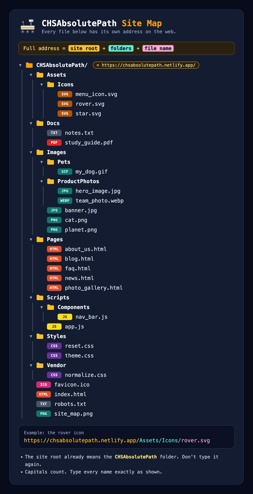

Text version of the map
CHSAbsolutePath/ ├── Assets/ │ └── Icons/ │ ├── menu_icon.svg │ ├── rover.svg │ └── star.svg ├── Docs/ │ ├── notes.txt │ └── study_guide.pdf ├── Images/ │ ├── Pets/ │ │ └── my_dog.gif │ ├── ProductPhotos/ │ │ ├── hero_image.jpg │ │ └── team_photo.webp │ ├── banner.jpg │ ├── cat.png │ └── planet.png ├── Pages/ │ ├── about_us.html │ ├── blog.html │ ├── faq.html │ ├── news.html │ └── photo_gallery.html ├── Scripts/ │ ├── Components/ │ │ └── nav_bar.js │ └── app.js ├── Styles/ │ ├── reset.css │ └── theme.css ├── Vendor/ │ └── normalize.css ├── favicon.ico ├── index.html ├── robots.txt └── site_map.png